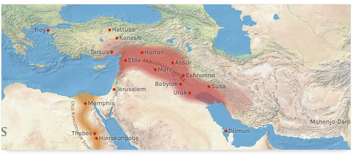

Akkad Emperor (အက်ကဒ် အင်ပါယာ) ဆိုတာ ကမာ ပေါ် မှာ ကာလ အလိုက် ပေါ် ပေါက် ခဲ့သော Emperor တွေထဲမှာ အစောဆုံး ပေါ် ပေါက်ခဲ့သော အင်ပါယာ ဖြစ်ပြီး BC 2350 မှ 2150 ထိ ပေါ်ပေါက် တည်ရှိခဲ့ပါတယ်။ အက်ကဒ် အင်ပါယာ ကို စတင် တည်ထောင် သူ က တော့ “Sargon the Great” ဖြစ်ပြီး သူမှ နေပြီး မက်ဆိုပိုတေးမီးယား ဒေသ ကို စုစည်း ပြီး တည်ထောင် အုပ်ချုပ် ခဲ့ခြင်း ဖြစ်ပါတယ်။
အက်အဒ် အင်ပါယာ ဆိုပြီး စတင် မပေါက် ခင် မှာ မက်ဆိုပိုတေးမီးယား ဒေသ မှာ နိုင်ငံ ငယ်လေးများပြန်ကြဲ တည်ရှိပြီး အချင်းချင်း ပြိုင်ဆိုင် တိုက်ခိုက် လေ့ ရှိခဲ့ပါသည်။ အဆိုပါ နိုင်ငံများအကြား အန်မာ နိုင်ငံ ၏ ဘုရင် ဖြစ်သူ “လူဂါဇာဂါဆီ (Lugalzagesi)” မှာ အင်အားကြီးပြီး နိုင်ငံငယ် လေးများကို ဖြည်းဖြည်း ချင်းသိမ်းပိုက် ပြီး တိုးချဲ့ လာလျက် ရှိခဲ့ပါသည်။ ထို အချိန် “ဆာဂွန်” မှာ ဆူမားရီယား နိုင်ငံငယ် ၏ ဘုရင် ဖြစ်သူ “အာ-ဇာဘာဘာ” ထံတွင် ဖလားတော်ဝန် အဖြစ် ခစားလျက် ရှိခဲ့ပါသည်။ “ဆာဂွန်”မှာ အစပိုင်းတွင် ဘုရင် ဖြစ်သူ၏ ယုံကြည်မှု ကို ရရှိခဲ့သော်လည်း နောက်ပိုင်းတွင် သံသယ ရှိခြင်းကို ခံခဲ့ရပါသည်။ ဆူမားရီယား နိုင်ငံငယ် ၏ ဘုရင် ဖြစ်သူ “အာ-ဇာဘာဘာ” သည် အန်မာ နိုင်ငံ ၏ ဘုရင် ဖြစ်သူ “လူဂါဇာဂါဆီ (Lugalzagesi)” မှာ အင်အားတိုးချဲ့ လာမှု အပေါ် ကြောက်ရွံ့ လာပြီး “အာဂွန်” ကို ငြိမ်းချမ်းရေး စေ့စပ် ရန် စေလွှတ်ခဲ့ပါသည်။ စာချွန်လွှာတွင် ပါရှိသော အကြောင်းအရာ များကို သေချာစွာ မသိရှိသော်လည်း သမိုင်း ပညာရှင်များက မူ “ဆာဂွန် ကို ကွပ်မျက် ရန်” ပါရှိသည် ဟု ခန့်မှန်းခဲ့ကြပါသည်။ သို့သော် အန်မာ နိုင်ငံ ၏ ဘုရင် ဖြစ်သူ လူဂါဇာဂါဆီ သည် “အာဂွန်” ကို မကွပ်မျက် ပဲ သူ့ လူအဖြစ် သိမ်းသွင်း ချီးမြောက် ခဲ့ပါသည်။ ထက်မြက် သော “အာဂွန်” ကို ချီးမြောက်ခဲ့သော်လည်း “အာဂွန်” နှင့် အန်မာ ဘုရင် တို့ကြားတွင် ဆက်ဆံ ရေး ပြိုကွဲ ခဲ့ကြပါသည်။ အကြောင်းရင်းမှာ “အာဂွန်” မှာ အန်မာ ဘုရင်၏ မိဖုရား နှင့် ညှိစွန်းသောကြောင့် ဟု ဖော်ပြချက်များလဲ တွေ့ရှိရပါသည်။ “ဆာဂွန်” မှာ အန်မာ ဘုရင် ကို ပုန်ကန် ၍ “အူရက် (Uruk) မြို့ကို ဦးစွာ သိမ်းပိုက် လိုက်ပါသည်။ အန်မာ ဘုရင်မှာ စစ်ချီ တိုက်ခိုက် ရာ “အာဂွန်”အား ရှုံးနိမ့် ၍ ဖမ်းဆီး ကွပ်မျက်ခြင်း ခံခဲ့ရပါသည်။ ထို့နောက် “အာဂွန်” မှာ အခြားသော တိုင်းနိုင်ငံ များကိုလည်း တိုက်ခိုက် သိမ်းပိုက် စိုးစံ ခဲ့ပါသည်။ Sargon the Great (ဆာဂွန် ဘုရင် ကြီး) ဟာ နှစ် ပေါင်း ၅၆ နှစ် စိုးစံပြီးနောက် လူကြီးရောဂါနှင့် နတ်ရွာစံ ခဲ့ပါသည်။ အက်ကဒ် မြို့တော် ရဲ့ တည်နေရာ ကို မည်သူမျှ အတိအကျ မသိသလို ဘယ်လို စတင် ပေါ်ပေါက် ပြီး ဘယ်လို ပျက်သုန်း သွားတယ် ဆိုတာ ကို မသိကြပါဘူး “အာဂွန်” တည်ဆောက် စိုးစံခဲ့သော Akkad မြို့တော် က ဘေဘီလုံ မြို့တော်ရဲ့ မြောက်ဘက် သို့မဟုတ် အနောက်မြောက် ဘက် ဒေသတွင် တည်ရှိပြီး တီ ဂရစ် နှင့် ယူဖရိတ် မြစ် တို့ ဆုံရာ အနီးတဝိုက် ဒေသတွင် တည်ရှိပါတယ်။ Akkad မြို့တော်ရဲ့ မြောက် ဘက် နယ်နိမိတ် ဟာ မျက်မှောက် ခေတ် ဘက်ကဒတ် မြို့ နားထိ တည်ရှိခဲ့တယ် လို့ ဖော်ပြကြပါတယ်။
“အာဂွန်” ဘုရင်ကြီး၏ လက်ထက်တွင် ပထမဆုံးသော စာပို့ စနစ် စတင် တီထွင် ပေါ်ပေါက် ခဲ့သည်ဟု ဖေါ်ပြပါရှိပါသည်။ စာအိပ်ပေါ်တွင် ချိပ် ပိတ်ပြီး သက်မှတ် ထားသောလက်ခံရရှိသူမှသာ ဖွင့်ဖောက်ခွင့်ရှိသော စနစ်မျိုးဟု ဖေါ်ပြပါရှိပါသည်။
Akkad Emperor (အာခက် အင်ပါယာ) တွင် ဘုရင် ခုနှစ် ဆက် အုပ်စိုး ခဲ့ပါသည်။ အစဥ်လိုက် အားဖြင့် 1. Sargon (ဆာဂွန်) 2. Rimush (ရီမစ်(ရှ)) 3.Manishtushu (မန်နစ်ရှ်တူရှူ) 4. Naram-Sin (နာမန်-ဆင်း) 5. Shar-Kali-Sharri (ရှာ-ကာလီ-ရှာရီ) 6. Dudu (ဒူဒူ) 7.Shu-turul(ရှူ-တာရယ်) တို့ ဖြစ်ကြပါတယ်။